El hueso como órgano, la clasificación de los huesos y las articulaciones
Como siempre: ninguna tiene todavía respuesta correcta y no hace falta haber leído el capítulo. Piénsalas, coméntalas con tu grupo y quédate con tu respuesta. Al final de la segunda sesión volvemos sobre las cuatro.
El esqueleto sostiene todo tu cuerpo, pero solo pesa unos 10 kilos. Una barra de acero con esa resistencia pesaría muchísimo más. ¿Cómo consigue un hueso ser tan resistente y tan liviano a la vez?
Tu globo ocular está alojado en una cavidad hecha de siete huesos distintos que encajan entre sí. ¿Por qué siete y no uno solo, que sería más sencillo y más fuerte?
Los huesos del cráneo están unidos por articulaciones —las suturas— que no permiten ningún movimiento. Si no se mueven, ¿para qué son articulaciones? ¿Por qué no nacer con el cráneo de una sola pieza?
El hueso parece lo más inerte del cuerpo, pero se renueva por completo cada cierto número de años, y tú no notas nada. ¿Qué gana el cuerpo demoliendo y rehaciendo continuamente su propio esqueleto?
Las cuatro se responden con la misma idea, que es la de todo el curso: la forma sigue a la función. Un hueso es liviano porque está hueco donde no hace falta y macizo donde sí; la órbita tiene siete huesos porque crece y se remodela por partes; las suturas existen para permitir el crecimiento, no el movimiento. Y hoy vas a ver que el hueso, lejos de ser inerte, es de los tejidos más activos que tienes.
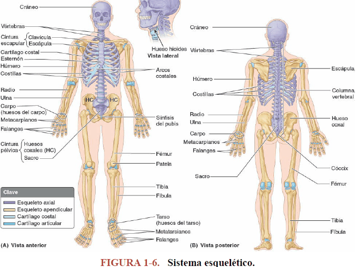
El esqueleto completo. Antes de entrar en el detalle, una vista del conjunto. Casi todo lo que veremos hoy —clasificación, estructura, uniones— se puede ir señalando sobre esta lámina.
Si preguntas en la calle para qué sirven los huesos, todo el mundo dice «para sostener» y «para proteger». Son dos de seis, y las otras cuatro son las que explican por qué el hueso es un órgano vivo y no un andamio.
| Función | En qué consiste |
|---|---|
| 1 · Sostén | Es el armazón del cuerpo: sostiene los tejidos blandos y da inserción a los tendones de casi todos los músculos esqueléticos |
| 2 · Protección | Encierra los órganos más delicados. El cráneo protege el encéfalo, las costillas el corazón y los pulmones — y la órbita, el ojo |
| 3 · Movimiento | Los huesos son las palancas; los músculos, el motor. Sin un punto rígido donde tirar, la contracción muscular no movería nada |
| 4 · Homeostasis mineral | Es el almacén de calcio y fósforo del organismo. Los libera a la sangre cuando hacen falta y los recupera cuando sobran |
| 5 · Producción de células sanguíneas | En la médula ósea roja ocurre la hemopoyesis: se fabrican eritrocitos, leucocitos y plaquetas |
| 6 · Almacenamiento de triglicéridos | La médula ósea amarilla guarda grasa, que es reserva de energía |
El esqueleto adulto tiene 206 huesos, y se divide en dos por un criterio geométrico simple: si está en el eje del cuerpo o si cuelga de él.
Los del eje longitudinal: cabeza, columna vertebral y tórax —esternón y costillas—. Es el que protege. Aquí están todos los huesos que le interesan a un optómetra.
Los de los miembros y las cinturas que los sujetan al eje: escapular —clavícula y escápula— y pélvica. Es el que mueve.
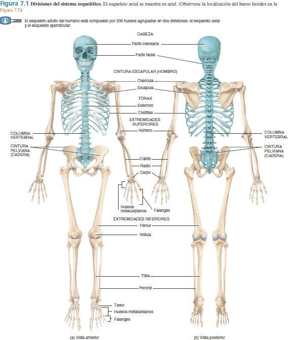
Figura 7.1 · Las dos divisiones. En color, el axial: cabeza, columna y tórax. En gris, el apendicular: miembros y las cinturas que los cuelgan del eje.
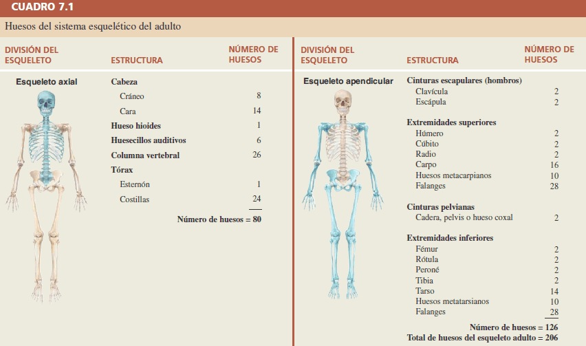
Cuadro 7.1 · Los 206 huesos, contados. 80 axiales y 126 apendiculares. No hay que memorizar la tabla: sirve para ver de un vistazo dónde se concentran.
Los 22 huesos de la cabeza —8 craneales y 14 faciales— son la parte del esqueleto que vas a usar toda la carrera. De ellos, siete forman cada órbita, y por sus aberturas pasan el nervio óptico, la arteria oftálmica y los nervios que mueven el ojo. Un traumatismo orbitario, un tumor que erosiona una pared, una fractura del piso: todo eso es osteología aplicada, y empieza aquí.
Son cinco tipos. Lo que hay que aprender no es la lista, sino la lógica: en cada uno, la geometría explica para qué sirve.
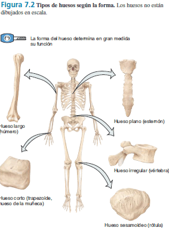
Figura 7.2 · Tipos de huesos según la forma. Los huesos no están dibujados a escala. Fíjate en el criterio: es la proporción, no el tamaño — por eso las falanges, que miden dos centímetros, son huesos largos.
| Tipo | Para qué esa forma | Ejemplos |
|---|---|---|
| Largo | Tubulares y con más longitud que anchura. Funcionan como palancas: un pequeño acortamiento del músculo produce un gran desplazamiento del extremo | Húmero, fémur, falanges — sí, los de los dedos también son largos |
| Corto | Casi cúbicos. Muchos huesos pequeños juntos dan estabilidad con movilidad repartida: cada uno se mueve poco, el conjunto mucho | Solo en el carpo (muñeca) y el tarso (tobillo) |
| Plano | Delgados y a menudo curvos. Dan protección con poco peso y mucha superficie de inserción muscular | Huesos del cráneo, escápula, esternón, costillas |
| Irregular | Formas complejas que no entran en las anteriores. Suelen resolver varias funciones a la vez en un espacio apretado | Vértebras, y los huesos de la cara: etmoides y esfenoides |
| Sesamoideo | Se desarrollan dentro de un tendón. Lo protegen del desgaste y cambian el ángulo de inserción, lo que aumenta la fuerza | La patela (rótula) es el mayor |
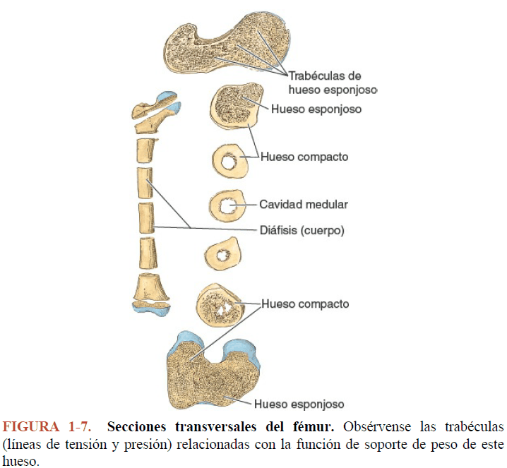
Moore, fig. 1-7 · Secciones del fémur. Mira las trabéculas: no están puestas al azar, siguen las líneas de tensión y presión que atraviesan el hueso. Es material colocado justo donde la carga lo pide — la ley de Wolff, hecha visible.
De los siete huesos orbitarios, unos son planos —el frontal, el lacrimal— y otros irregulares —el esfenoides, el etmoides, el maxilar—. Ninguno es largo ni corto. Eso no es casualidad: la órbita necesita paredes finas que protejan sin pesar y, a la vez, formas complejas que dejen pasar nervios y vasos por sitios muy precisos.
Y tiene una consecuencia clínica directa: el piso y la pared medial de la órbita son finísimos —el etmoides que forma la pared medial se llama lámina papirácea, «delgada como el papel»—. Por eso un golpe frontal sobre el globo ocular fractura antes esas paredes que el reborde: es la fractura por estallido, y descomprime la órbita hacia el seno maxilar.
Se usa el hueso largo como modelo porque tiene todas las piezas; en los demás tipos aparecen las mismas, solo que dispuestas de otro modo.
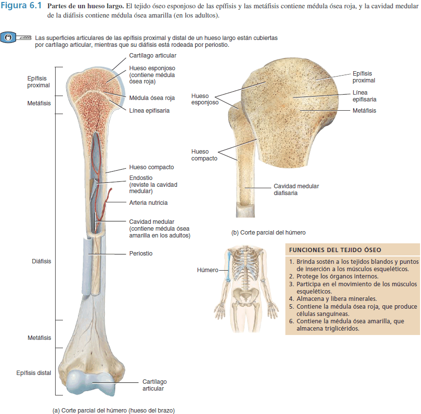
Figura 6.1 · Partes de un hueso largo. Localiza el corte: compacto por fuera, esponjoso en las epífisis y hueco en el centro. El hueso es un tubo, y por eso resiste tanto pesando tan poco.
| Parte | Qué es |
|---|---|
| Diáfisis | El cuerpo del hueso: el cilindro largo |
| Epífisis | Los dos extremos, ensanchados. Son las que se articulan |
| Metáfisis | La zona entre diáfisis y epífisis. En el hueso que crece, aquí está la placa epifisaria; en el adulto queda una línea |
| Cartílago articular | Capa fina de cartílago hialino sobre la superficie que se articula. Amortigua y reduce la fricción. No tiene pericondrio, y por eso repara mal |
| Periostio | Membrana de conectivo denso irregular que envuelve el hueso salvo donde hay cartílago articular. Nutre, permite el crecimiento en grosor, repara y da inserción a tendones y ligamentos. Está muy inervado |
| Cavidad medular | El espacio hueco de la diáfisis, con médula ósea amarilla en el adulto |
| Endostio | Membrana fina que tapiza la cavidad medular por dentro |
Un tejido con este metabolismo necesita mucha irrigación, y el hueso está profusamente irrigado — sobre todo donde hay médula ósea roja. Los vasos entran por cuatro vías, y cada una atiende una zona:
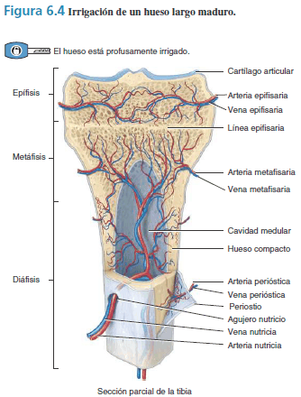
Figura 6.4 · Irrigación de un hueso largo maduro. Sigue la arteria nutricia: entra por un único agujero y se reparte por la cavidad medular. Las periósticas, en cambio, entran por muchos canales y traen los nervios consigo.
| Arterias | Por dónde entran | Qué irrigan |
|---|---|---|
| Periósticas | Por múltiples canales perforantes, desde el periostio | La parte externa del hueso compacto. Van acompañadas de nervios |
| Nutricia | Por el agujero nutricio, una sola abertura en la diáfisis | El hueso compacto interno y la médula de la cavidad medular |
| Metafisarias | Por las metáfisis | La médula roja y el hueso de esa zona |
| Epifisarias | Por las epífisis | La médula roja y el hueso esponjoso de los extremos |
Y con la sangre viajan los nervios. El periostio está inervado por abundantes nervios sensitivos, especialmente sensibles al estiramiento — no al contacto. Eso explica el dolor intenso de una fractura, de un tumor óseo que expande el hueso y de la punción de médula ósea.
El periostio es una de las estructuras más inervadas del cuerpo, y en la cara anterior de la tibia está justo bajo la piel, sin músculo que lo amortigüe. El hueso en sí apenas duele; lo que duele es su envoltura.
El mismo dato explica algo que sí verás en consulta: el reborde orbitario también tiene el periostio a flor de piel. Y dentro de la órbita, esa capa recibe el nombre de periórbita — se despega con facilidad del hueso, lo que en cirugía es una ventaja y en una infección un problema, porque deja un plano por donde el pus avanza.
Volvemos a la lógica de la clase pasada: el hueso es tejido conectivo, así que se define por su matriz. Pocas células, mucho material — solo que aquí el material está mineralizado.
Sobre todo hidroxiapatita, un fosfato de calcio cristalizado. Aporta la dureza y la resistencia a la compresión.
Aportan la flexibilidad y la resistencia a la tracción. Sin ellas el hueso sería tan quebradizo como la tiza.
| Célula | Qué hace | De dónde sale |
|---|---|---|
| Osteogénica | La única que se divide. Es la célula madre del hueso | Del mesénquima. Vive en periostio y endostio |
| Osteoblasto | Construye: secreta la matriz. Cuando queda atrapado en lo que él mismo fabricó, se convierte en osteocito | De la osteogénica |
| Osteocito | La célula madura y mayoritaria. Mantiene el tejido e intercambia sustancias con la sangre. Vive en una laguna | Del osteoblasto que quedó dentro |
| Osteoclasto | Destruye: libera enzimas y ácidos que disuelven las sales y degradan el colágeno. Es enorme y multinucleado | De la fusión de monocitos — viene de la sangre, no del hueso |
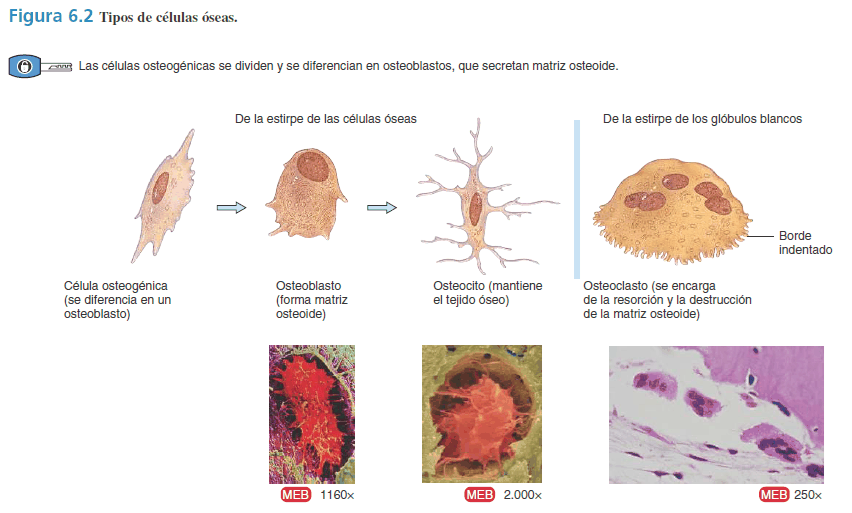
Figura 6.2 · Las cuatro células del hueso. Fíjate en el tamaño del osteoclasto y en sus múltiples núcleos: se nota a simple vista que no pertenece a la misma familia que las otras tres.
El mismo tejido, con dos arquitecturas. Y las dos están en todos los huesos.
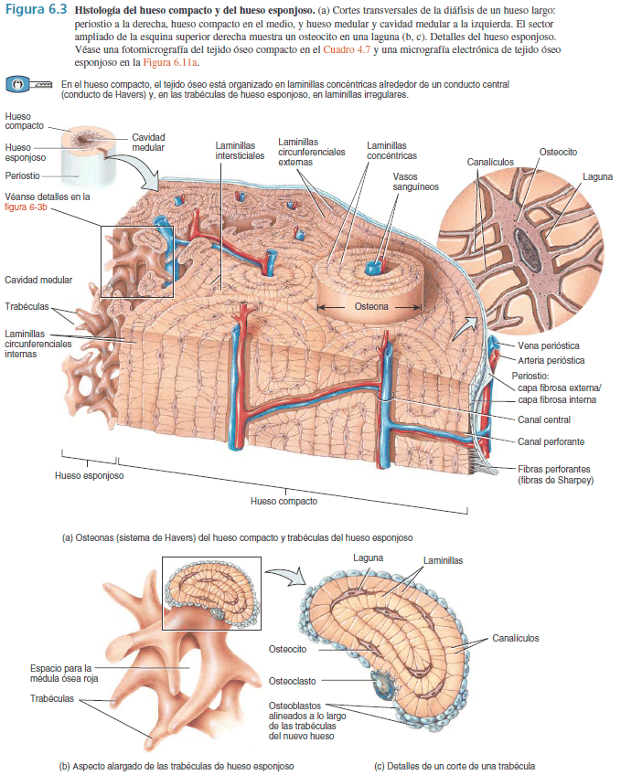
Figura 6.3 · Hueso compacto y hueso esponjoso. A la izquierda, las osteonas: anillos concéntricos en torno a un conducto con vasos. A la derecha, las trabéculas, sin osteonas y con médula en los huecos. Mismo tejido, dos arquitecturas.
| Compacto | Esponjoso | |
|---|---|---|
| Unidad | Osteona o sistema de Havers: laminillas concéntricas alrededor de un conducto central con vasos y nervios | Trabéculas: columnas irregulares con espacios entre ellas. No tiene osteonas |
| Dónde | Capa externa de todos los huesos y casi toda la diáfisis | Interior de las epífisis, y casi todo el volumen de los huesos cortos, planos e irregulares |
| Qué contiene | Los conductos, y por ellos vasos | Médula ósea roja en los espacios |
| Para qué | Resistencia, protección y soporte de las tensiones | Resiste según las líneas de fuerza, aligera el hueso y aloja la médula |
La lámina papirácea del etmoides y el piso orbitario son tan finos que apenas hay dos láminas de compacto con casi nada en medio — a veces menos de medio milímetro. Por eso ceden con tanta facilidad. En cambio el reborde orbitario, que sí tiene espesor y esponjoso dentro, es de las estructuras más resistentes de la cara: hace de parachoques y protege al globo de los golpes directos.
La superficie de un hueso no es lisa. Tiene salientes, huecos y agujeros, y todos tienen nombre. Esto parece la parte más árida de la osteología, pero es la más rentable: sin este vocabulario no se puede leer una descripción anatómica, ni un informe radiológico, ni un parte quirúrgico.
| Término | Qué es | Ejemplo |
|---|---|---|
| Proceso (apófisis) | Extensión o proyección, el término general | Proceso espinoso de una vértebra |
| Tuberosidad | Elevación grande y redondeada | Tuberosidad isquiática |
| Tubérculo | Eminencia pequeña | Tubérculo mayor del húmero |
| Trocánter | Elevación grande y roma. Solo en el fémur | Trocánter mayor |
| Cresta | Reborde alargado | Cresta ilíaca · cresta lacrimal |
| Línea | Elevación lineal, más suave que una cresta | Línea del sóleo, en la tibia |
| Espina | Prolongación puntiaguda | Espina de la escápula · espina troclear de la órbita |
| Protuberancia | Abultamiento | Protuberancia occipital externa |
| Cóndilo | Área articular redondeada | Cóndilos del fémur |
| Epicóndilo | Eminencia por encima de un cóndilo | Epicóndilos del húmero |
| Maléolo | Proceso redondeado | Maléolo lateral de la fíbula |
| Término | Qué es | Ejemplo |
|---|---|---|
| Foramen (agujero) | Paso a través del hueso | Foramen obturado · foramen óptico |
| Fosa | Hueco o depresión amplia | Fosa infraespinosa · fosa lacrimal |
| Incisura (escotadura) | Muesca en el borde de un hueso | Incisura isquiática mayor · incisura supraorbitaria |
| Carilla (cara, fosita) | Superficie plana y lisa, cubierta de cartílago, donde se articula con otro hueso | Carilla articular de una vértebra |
| Fisura | Hendidura alargada entre dos huesos | Fisura orbitaria superior |
| Conducto (meato) | Paso en forma de túnel | Meato acústico externo · conducto nasolacrimal |
| Seno | Cavidad llena de aire dentro de un hueso | Seno maxilar, justo bajo el piso de la órbita |
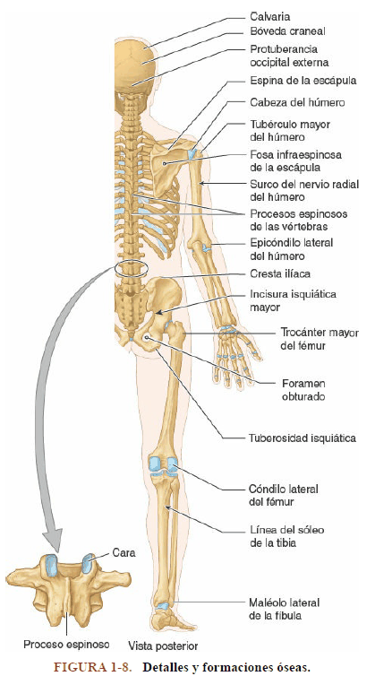
Moore, fig. 1-8 · Detalles y formaciones óseas. Todo el vocabulario de las dos tablas, señalado sobre huesos de verdad. Vale la pena volver a esta lámina cada vez que aparezca un término nuevo.
Fíjate en que ya puedes nombrar la órbita entera con los términos de arriba, sin haberla estudiado todavía:
Cinco términos genéricos, cinco estructuras oculares. El vocabulario es la herramienta; la órbita, el caso.
Cuerpo o porción cilíndrica de un hueso largo, formada casi toda por hueso compacto.
👁 Ningún hueso orbitario tiene diáfisis: todos son planos o irregulares.
Cada extremo ensanchado de un hueso largo; contiene hueso esponjoso y se articula.
👁 Su núcleo esponjoso aloja la médula ósea roja.
Zona entre diáfisis y epífisis. Contiene la placa epifisaria mientras el hueso crece.
👁 Cuando el crecimiento termina, queda como línea epifisaria.
Membrana de conectivo denso irregular que envuelve el hueso; nutre, repara y permite el crecimiento en grosor.
👁 Dentro de la órbita se llama periórbita y se despega con facilidad.
Membrana fina que tapiza la cavidad medular por dentro.
👁 Contiene células osteogénicas, igual que el periostio.
Unidad del hueso compacto: laminillas concéntricas en torno a un conducto central con vasos. También llamada sistema de Havers.
👁 El hueso esponjoso NO tiene osteonas.
Columna irregular de hueso esponjoso, orientada según las líneas de fuerza.
👁 Entre las trabéculas está la médula ósea roja.
Célula que construye: secreta la matriz ósea. Al quedar rodeada por ella se convierte en osteocito.
👁 Blasto = Build, construye.
Célula ósea madura, alojada en una laguna; mantiene el tejido e intercambia sustancias con la sangre.
👁 Se comunican por canalículos mediante uniones comunicantes.
Célula gigante y multinucleada que reabsorbe hueso; deriva de la fusión de monocitos.
👁 Clasto = Corta. Es el único que no viene de la línea ósea.
Cristal de fosfato de calcio que mineraliza la matriz y da dureza al hueso.
👁 Sin colágeno sería quebradiza como la tiza.
Abertura que atraviesa un hueso y da paso a vasos o nervios.
👁 El foramen óptico da paso al nervio óptico y a la arteria oftálmica.
Elige una opción en cada pregunta. La respuesta aparece al pulsar.
1. ¿Cuál de estas funciones del sistema esquelético no es mecánica?
2. Los huesos cortos se encuentran únicamente en dos regiones del cuerpo. ¿Cuáles?
3. ¿Por qué un hueso largo es hueco en el centro?
4. El osteoclasto se distingue de las otras tres células óseas en que:
5. A blunt blow to the eye fractures the orbital floor rather than the sturdy orbital rim. Which structural feature best explains this?
Un golpe romo en el ojo fractura el piso de la órbita y no el resistente reborde orbitario. ¿Qué rasgo estructural lo explica mejor?
El proceso se llama osificación y empieza en la sexta o séptima semana del desarrollo. Hay dos modos, y los dos consisten en lo mismo: sustituir un tejido conectivo previo por hueso. Lo que cambia es cuál era ese tejido.
El hueso se forma directamente dentro del mesénquima, sin molde intermedio. Da los huesos planos del cráneo, la mandíbula y la clavícula.
Es la más sencilla: unas células mesenquimáticas se convierten en osteoblastos, empiezan a secretar matriz y esa matriz se mineraliza donde estaba el tejido blando.
Primero se fabrica una maqueta de cartílago hialino, y el hueso la va sustituyendo. Da casi todos los demás huesos, y en particular los largos.
Es más lenta pero permite algo que la otra no: como el molde de cartílago puede seguir creciendo por delante del hueso, el hueso puede alargarse durante años.
En un hueso largo que todavía crece hay, en cada metáfisis, una lámina de cartílago hialino que no se osifica: la placa epifisaria. Funciona como una cinta transportadora — produce cartílago nuevo por el lado de la epífisis mientras se osifica por el lado de la diáfisis. Resultado: el hueso se alarga y la placa se mantiene.
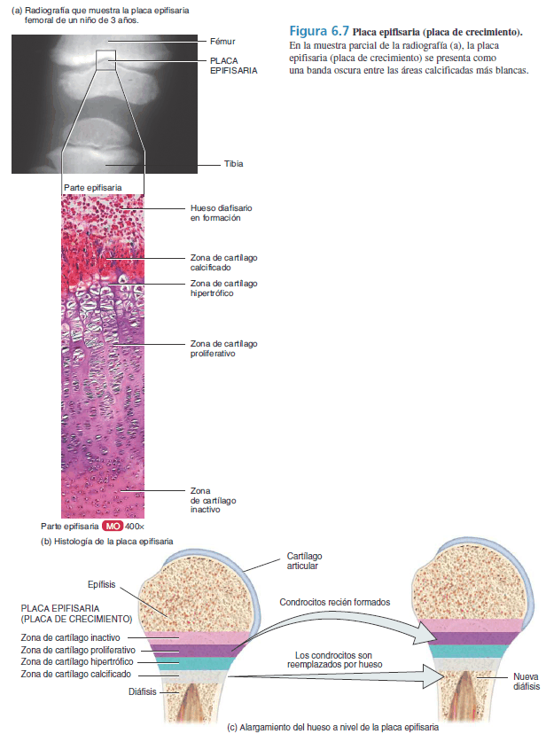
Figura 6.7 · La placa epifisaria. Las cuatro zonas, de la epífisis hacia la diáfisis. Crece por arriba y se osifica por abajo: por eso el hueso se alarga sin que la placa se consuma… hasta que deja de dividirse y se cierra.
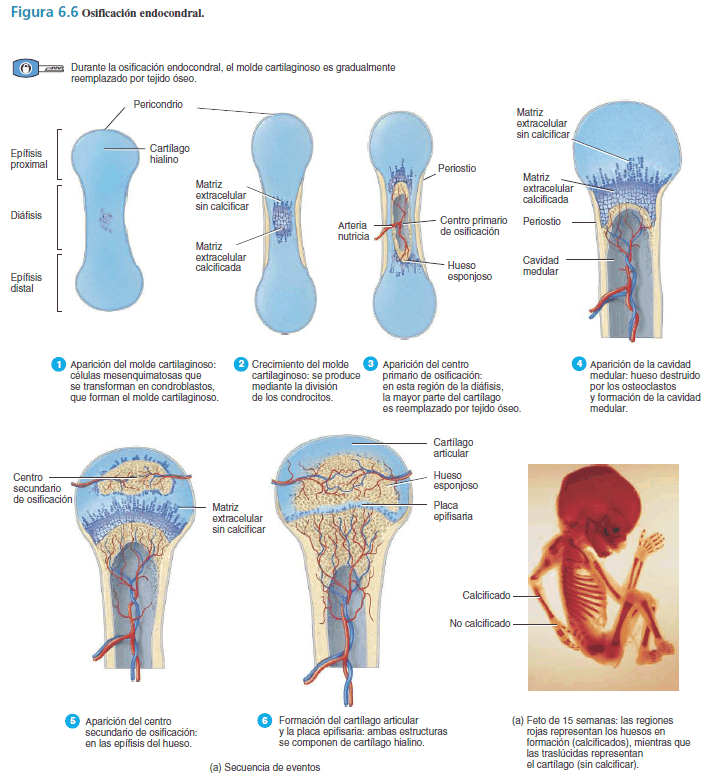
Figura 6.6 · Osificación endocondral. El molde de cartílago y su sustitución progresiva. Localiza el centro primario en la diáfisis y los secundarios en las epífisis.
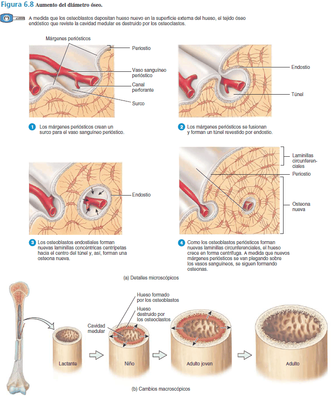
Figura 6.8 · Crecimiento en grosor. Dos procesos a la vez: el periostio añade hueso por fuera y los osteoclastos agrandan la cavidad por dentro. Así el hueso engorda sin volverse macizo.
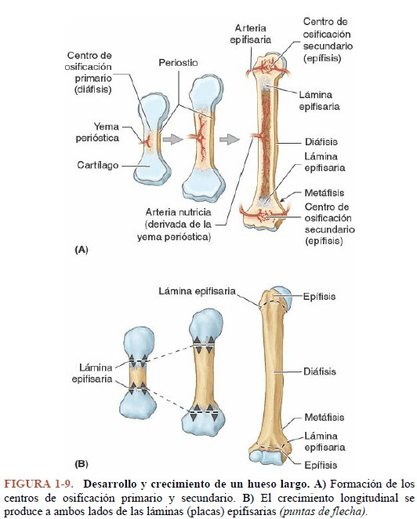
Moore, fig. 1-9 · Toda la vida de un hueso largo. De izquierda a derecha, el molde de cartílago, la aparición de los centros de osificación, el hueso en crecimiento con sus placas abiertas y, al final, el adulto con las epífisis soldadas. La secuencia completa en una sola lámina.
Cuando el cartílago deja de dividirse más rápido de lo que se osifica, la placa se consume, la epífisis se suelda a la diáfisis y queda la línea epifisaria. Ahí termina el crecimiento en longitud, y es definitivo.
Solo en la placa epifisaria, y solo hasta que se cierra.
Por aposición: los osteoblastos del periostio depositan hueso nuevo en la superficie externa. Esto no se detiene nunca.
El frontal y los huesos planos que la rodean son de osificación intramembranosa; el esfenoides y el etmoides tienen partes de osificación endocondral. Por eso la órbita del recién nacido no es una copia pequeña de la del adulto: crece a ritmos distintos según la pared.
Y de ahí sale un principio clínico importante: la órbita crece porque el ojo crece dentro. Si un niño pierde el globo ocular muy pronto —por un retinoblastoma, por ejemplo—, esa órbita se queda pequeña. Por eso se coloca un implante que mantenga el volumen: no es estético, es para que el hueso reciba el estímulo que necesita para crecer.
La remodelación ósea es un proceso continuo: los osteoclastos labran túneles en el hueso viejo y los osteoblastos los rellenan con hueso nuevo. No para nunca, y no se nota. Sirve para tres cosas: reparar microfracturas, liberar o almacenar calcio y adaptar la forma del hueso a las cargas.
El hueso se deposita donde se le exige y se reabsorbe donde no. Es la razón de que las trabéculas sigan las líneas de fuerza, de que el tenista tenga más hueso en el brazo dominante y de que un astronauta pierda masa ósea en ingravidez. La carga mecánica no es un desgaste para el hueso: es su estímulo.
El 99 % del calcio del cuerpo está en el esqueleto, pero lo que importa fisiológicamente es el 1 % que circula: de él dependen la contracción muscular, la coagulación y la transmisión nerviosa. Ese nivel se mantiene constante a costa del hueso.
| Señal | De dónde viene | Qué hace con el calcio en sangre |
|---|---|---|
| Paratohormona (PTH) | Glándulas paratiroides | Lo sube. Activa a los osteoclastos: saca calcio del hueso |
| Calcitonina (CT) | Glándula tiroides | Lo baja. Frena a los osteoclastos: el calcio se queda en el hueso |
| Vitamina D | Piel y dieta | Lo sube. Aumenta la absorción intestinal de calcio y fosfato |
Osteoporosis. La resorción supera a la formación: el hueso pierde masa y se vuelve poroso y frágil. Es más frecuente tras la menopausia porque los estrógenos frenaban la resorción, y al caer, los osteoclastos quedan sin freno. El hueso conserva su forma; lo que pierde es densidad.
Raquitismo y osteomalacia. Falta vitamina D, así que la matriz se fabrica pero no se mineraliza. Es el problema inverso: hay hueso, pero blando. En el niño deforma los huesos en crecimiento —raquitismo—; en el adulto los reblandece —osteomalacia—.
La distinción vale la pena porque es exactamente la de la sección anterior: la osteoporosis es falta de matriz; la osteomalacia, falta de mineral. Y la resistencia del hueso necesitaba las dos cosas.
En la enfermedad de Paget, donde la remodelación se descontrola y el hueso se rehace deprisa y mal, el engrosamiento del cráneo puede estrechar los agujeros por los que pasan los nervios. Cuando afecta al conducto óptico, comprime el nervio óptico y produce pérdida visual. También aparecen estrías angioides en el fondo de ojo: grietas en la membrana de Bruch.
Es un buen recordatorio de por qué esta clase importa en optometría. El ojo vive dentro de un hueso, y sale de la órbita por un agujero de hueso. Cualquier enfermedad que cambie el grosor del hueso puede acabar comprimiendo la vía visual.
Una articulación es el punto de contacto entre dos huesos, entre hueso y cartílago, o entre hueso y diente. Y aquí está la idea que más cuesta al principio: «articulación» no significa «que se mueve». Significa unión.
Se clasifican de dos maneras distintas, y hay que tener las dos en la cabeza porque no coinciden: una mira de qué está hecha la unión y la otra, cuánto se mueve.
Las dos clasificaciones no son equivalentes. La estructural mira el material; la funcional, el movimiento.
| Tipo | Qué une los huesos | Subtipos y ejemplos |
|---|---|---|
| Fibrosa | Tejido conectivo denso irregular. Sin cavidad | Sutura — entre huesos del cráneo · Sindesmosis — tibioperonea distal, y la gonfosis del diente en su alvéolo · Membrana interósea — entre radio y cúbito |
| Cartilaginosa | Cartílago. Sin cavidad | Sincondrosis — cartílago hialino: la placa epifisaria · Sínfisis — fibrocartílago: sínfisis del pubis, discos intervertebrales |
| Sinovial | Cavidad sinovial con líquido, más una cápsula | Todas las que se mueven libremente: hombro, codo, rodilla, cadera |
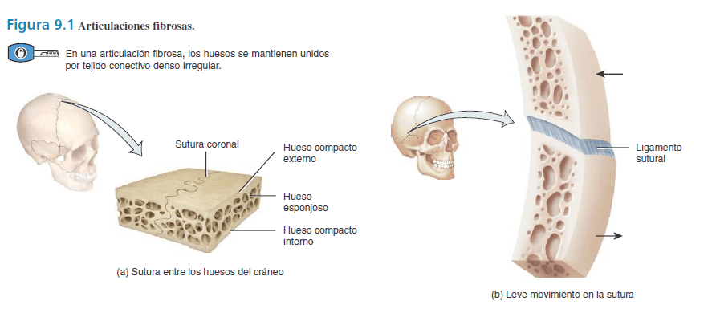
Figura 9.1 · Fibrosas. Sutura, sindesmosis y gonfosis. En las tres, tejido fibroso entre los huesos y ninguna cavidad.
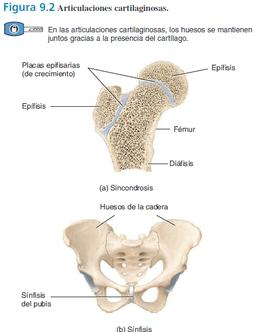
Figura 9.2 · Cartilaginosas. Arriba la sincondrosis —cartílago hialino, la placa epifisaria—; abajo la sínfisis —fibrocartílago, pubis y discos—.
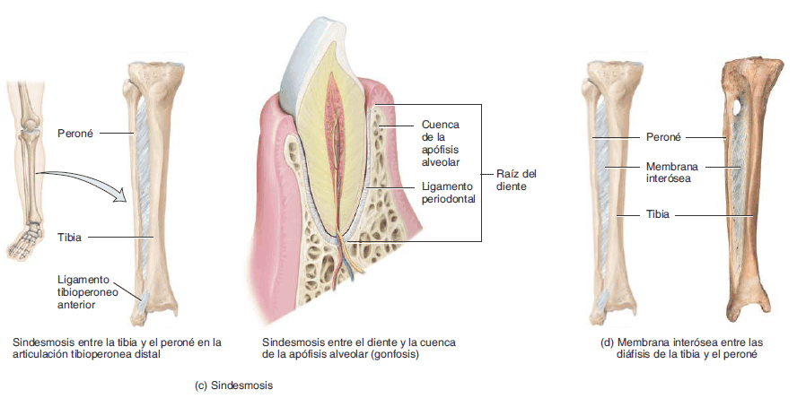
Figura 9.1 c–d · Las fibrosas que sí se mueven. A la izquierda la sindesmosis tibioperonea; en el centro la gonfosis, con el ligamento periodontal que amortigua la mordida; a la derecha la membrana interósea, la fibrosa más extensa. Ninguna de las tres es inmóvil — solo la sutura y la gonfosis lo son de verdad, y esa es la trampa habitual del tema.
Tortora se queda en tres categorías estructurales; Latarjet añade una cuarta, la articulación ósea o sinostosis: aquella en la que el tejido interpuesto es hueso. Son completamente inmóviles, y casi siempre son el destino final de otra articulación: una sutura o una sincondrosis que acaba osificándose.
Merece la pena tenerlo presente porque enseña que las articulaciones no son categorías fijas: una misma unión puede ser cartilaginosa en el niño y ósea en el adulto. La clasificación describe un momento, no una esencia.
Latarjet las subdivide según cómo encajan los bordes, y esto sí conviene verlo porque el cráneo tiene las cuatro y varias están en la órbita.
Los cuatro tipos de sutura según Latarjet. A más engranaje, más resistencia a la separación.
Inmóvil. Suturas del cráneo, gonfosis.
Poco móvil. Sínfisis del pubis, discos intervertebrales, membranas interóseas.
Libremente móvil. Y aquí sí hay equivalencia exacta: todas las diartrosis son sinoviales, y todas las sinoviales son diartrosis.
Aquí está la tercera pregunta del inicio. Las suturas son articulaciones fibrosas inmóviles, y su función no es el movimiento: es permitir que el cráneo crezca. Mientras están abiertas, cada hueso puede añadir material en su borde y la bóveda se agranda siguiendo al encéfalo. En el recién nacido ni siquiera están cerradas: son las fontanelas, que además dejan que la cabeza se moldee al pasar por el canal del parto.
Cuando una sutura se cierra antes de tiempo —craneosinostosis— el cráneo crece deformado, porque solo puede hacerlo en las direcciones que quedan libres. Y si eso deforma las órbitas, aparecen proptosis, estrabismo y a veces compresión del nervio óptico: motivo de consulta oftalmológica antes que traumatológica.
Es el tipo más frecuente y el único que permite movimiento amplio. Lo que la define es justamente lo que no hay: entre los dos huesos no hay tejido que los una directamente, sino un espacio.
| Componente | Qué es y para qué |
|---|---|
| Cavidad sinovial | El espacio entre los huesos. Es lo que permite que se muevan uno respecto al otro |
| Cartílago articular | Cartílago hialino que recubre las superficies. Reduce la fricción y amortigua. Sin pericondrio, sin vasos: por eso no se repara |
| Cápsula articular | Rodea la articulación. Tiene dos capas: la membrana fibrosa externa —conectivo denso, da resistencia— y la membrana sinovial interna |
| Líquido sinovial | Lo secreta la membrana sinovial. Lubrica y, sobre todo, nutre al cartílago articular, que no tiene vasos propios |
| Ligamentos accesorios | Refuerzan. Pueden ser extracapsulares —fuera de la cápsula— o intracapsulares |
| Discos y meniscos | Fibrocartílago entre las superficies. Aparecen cuando los huesos no encajan bien: rellenan y reparten la carga |
| Bolsas y vainas | Sacos de líquido sinovial que reducen el rozamiento donde tendones o piel friccionan contra hueso |
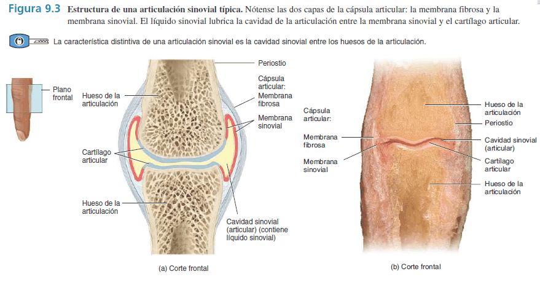
Figura 9.3 · La articulación sinovial típica. Todos los componentes de la tabla, en un solo corte. Fíjate en las dos capas de la cápsula: la fibrosa por fuera, que da resistencia, y la sinovial por dentro, que fabrica el líquido.
Las articulaciones tienen inervación abundante. Las fibras de dolor son numerosas en la membrana fibrosa y en los ligamentos; la membrana sinovial, en cambio, es poco sensible. Y transmiten la propiocepción: la información de posición y movimiento sin la cual no sabrías dónde está tu mano con los ojos cerrados.
Enuncia algo muy útil: el nervio que inerva una articulación inerva también los músculos que la mueven y la piel que los cubre.
La consecuencia práctica es que el dolor articular se refiere a la piel de esa zona, y a veces a distancia. Explica por qué un problema de cadera duele en la rodilla, o por qué un dolor cervical se siente en el hombro. Cuando un paciente señala dónde le duele, no siempre señala dónde está el problema.
De las articulaciones de la cabeza, casi todas son suturas inmóviles. La gran excepción es la temporomandibular, que es sinovial, tiene disco articular y permite abrir la boca. Su disfunción produce dolor referido que llega a la región periorbitaria y a la sien, y no es raro que llegue a consulta como «dolor de ojos» o cefalea.
El globo ocular, en cambio, no se articula con nada: se apoya en la grasa orbitaria y lo mueven seis músculos. No es una articulación sinovial, pero funciona con la misma lógica — superficies lisas, un medio que lubrica y un rango de movimiento limitado por tejidos blandos.
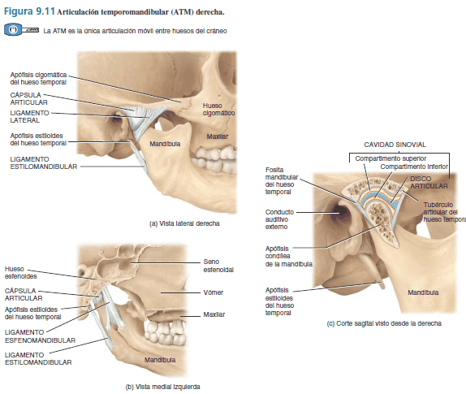
Figura 9.11 · La temporomandibular. La única sinovial de la cabeza. El disco articular que se ve en el corte es lo que le permite combinar bisagra y deslizamiento — y lo que se desplaza cuando la articulación chasquea.
Se clasifican por la forma de las superficies, y esa forma determina en cuántos ejes puede moverse la articulación. Uno, dos o tres.
| Tipo | Forma | Ejes | Ejemplo |
|---|---|---|---|
| Artrodia (plana) | Superficies casi planas: se deslizan | No axial o biaxial | Entre huesos del carpo y del tarso |
| Gínglimo (troclear, «bisagra») | Una superficie convexa en otra cóncava | Uniaxial | Codo, tobillo, rodilla (modificado) |
| Trocoide (pivote) | Superficie redondeada dentro de un anillo | Uniaxial, rotación | Atloaxoidea — la del «no» con la cabeza — y radiocubital |
| Condílea (elipsoidea) | Proyección ovalada en cavidad ovalada | Biaxial | Muñeca, metacarpofalángicas |
| En silla de montar | Una silla y un jinete: cóncava en un sentido, convexa en el otro | Biaxial | Carpometacarpiana del pulgar — la que nos da la pinza |
| Enartrosis (esferoidea) | Esfera en una copa | Triaxial | Hombro y cadera |
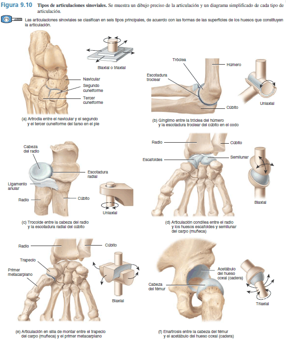
Figura 9.10 · Los seis tipos de sinovial. El esquema geométrico junto al ejemplo real. Recorre la lámina preguntándote en cada una cuántos ejes permite: ahí está toda la clasificación.
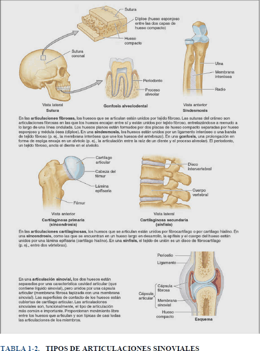
Moore, tabla 1-2 (1/2). Plana, gínglimo y trocoide. Compara la forma de las superficies con el número de ejes que permite.
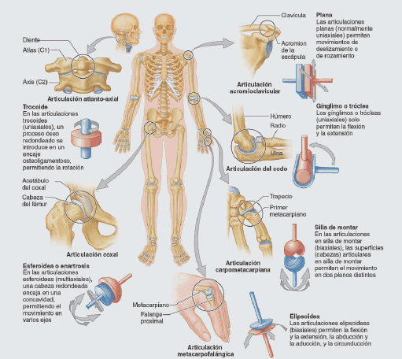
Moore, tabla 1-2 (2/2). Condílea, en silla de montar y esferoidea. La progresión de la tabla es la de la movilidad: uno, dos y tres ejes.
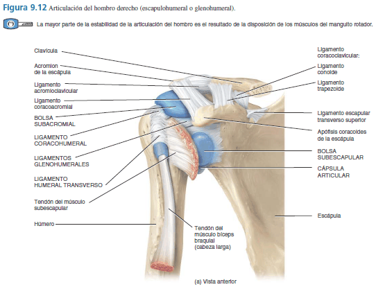
Hombro · enartrosis. La cavidad glenoidea es poco profunda y la cápsula, laxa. De ahí su enorme movilidad — y que sea la articulación que más se luxa.
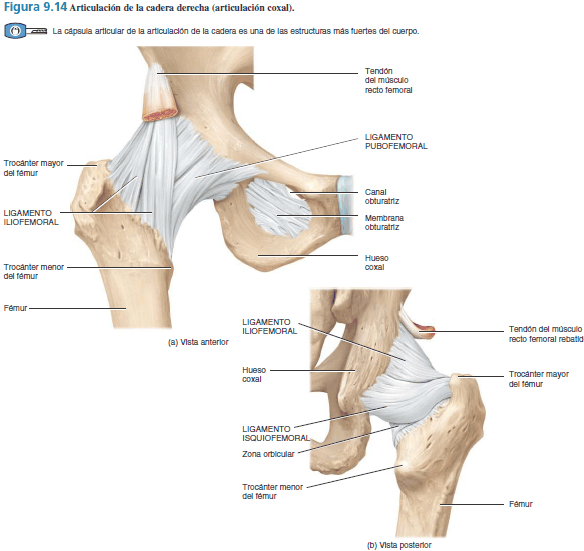
Cadera · enartrosis también. Misma forma, pero el acetábulo es profundo y la cápsula fuerte. Se mueve menos y casi no se disloca: la comparación entre las dos es la lección.
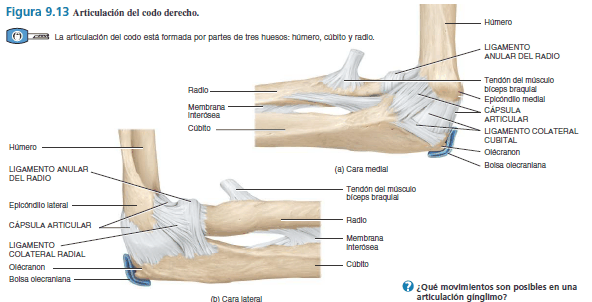
Codo · gínglimo. Una superficie convexa en otra cóncava: solo flexión y extensión. Uniaxial, un grado de libertad.
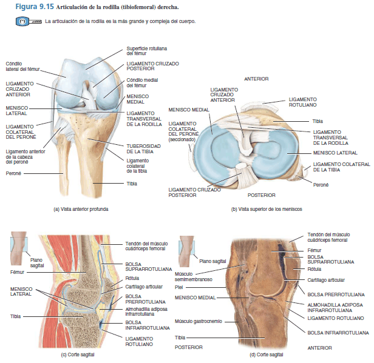
Rodilla · gínglimo modificado. Los cóndilos no encajan bien con la tibia, y por eso hay meniscos: fibrocartílago que rellena y reparte la carga. Es el caso de la tabla anterior.
Latarjet usa una expresión que conviene tener, porque aparece en biomecánica y en óptica: los grados de libertad. Son el número de ejes independientes sobre los que una articulación puede girar — es decir, exactamente lo mismo que la columna «ejes» de la tabla, dicho de otra manera.
Gira sobre un solo eje. Gínglimo y trocoide.
Dos ejes independientes. Condílea y en silla de montar.
Tres ejes. Solo la enartrosis — y el globo ocular.
La amplitud de movimiento (ROM) no la decide solo la forma de las superficies. Seis factores la modulan:
El vocabulario ya lo viste en la primera clase, con los planos y los ejes. Aquí solo se ordena en las cuatro familias de Tortora y se conecta con el ojo, que es donde lo vas a usar.
Superficies casi planas que se desplazan una sobre otra, adelante y atrás o de lado a lado, sin que cambie el ángulo entre los huesos. Es lo que hacen los huesos del carpo entre sí.
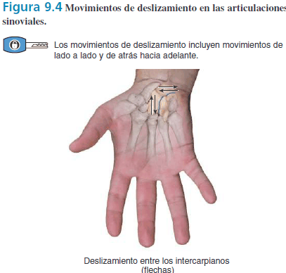
Figura 9.4 · Deslizamiento. Las superficies se desplazan sin girar. Poco recorrido en cada articulación, mucho en el conjunto.
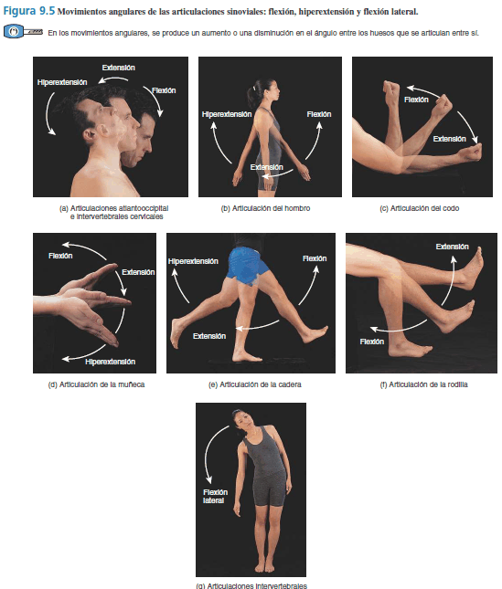
Figura 9.5 · Flexión, extensión e hiperextensión. Todos en el plano sagital. Localiza la hiperextensión: es la que va más allá de la posición anatómica.
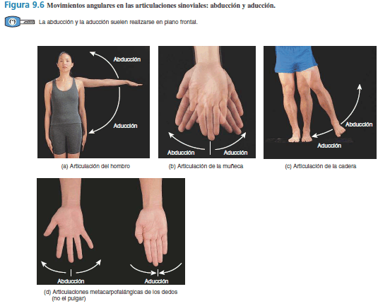
Figura 9.6 · Abducción y aducción. En el plano frontal, alejarse o acercarse a la línea media. Ojo con los dedos: su línea media es el tercer dedo, no la del cuerpo.
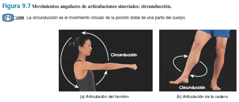
Figura 9.7 · Circunducción. No es un movimiento nuevo: es la secuencia de los anteriores encadenados. El extremo distal dibuja un cono.
El hueso gira alrededor de su eje longitudinal. Girar la cabeza para decir «no» es rotación en la articulación atloaxoidea.
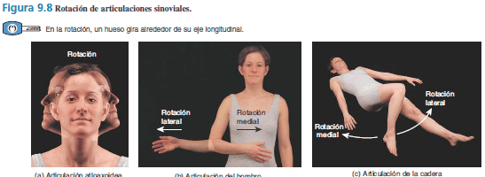
Figura 9.8 · Rotación. El hueso gira sobre su propio eje sin desplazarse. Es el movimiento de la trocoide.
Elevación y depresión · protracción y retracción · inversión y eversión · dorsiflexión y flexión plantar · supinación y pronación · oposición del pulgar.
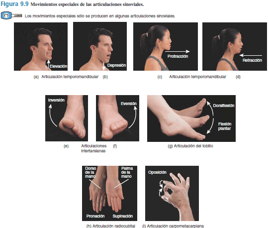
Figura 9.9 · Los movimientos especiales. Cada uno ocurre solo en ciertas articulaciones. La oposición del pulgar es la que nos da la pinza, y depende de la articulación en silla de montar.
El globo ocular gira dentro de la órbita sobre los ejes de Fick, que ya viste en la clase 1. Funciona como una enartrosis sin serlo: triaxial.
Los términos son los mismos que acabas de repasar. La diferencia es que en el ojo aducción no es «acercarse a la línea media del cuerpo», sino a la línea media de la cara — hacia la nariz. En optometría, «nasal» y «temporal» sustituyen a «medial» y «lateral», y conviene fijarlo desde ya.
Hasta aquí la articulación sinovial ha sido un esquema. Ahora conviene abrir tres reales, porque en ellas aparece la regla que gobierna todo el sistema y que no se ve en el dibujo genérico.
La glenohumeral es la articulación más móvil del cuerpo, y por eso la que más se luxa. El motivo es puramente geométrico: la cabeza del húmero es grande y la cavidad glenoidea de la escápula es pequeña y poco profunda. Apenas la abraza — la comparación clásica es una pelota de golf apoyada en su tee.
Fíjate en lo que no refuerzan: la cara inferior. Ahí no hay manguito, y ahí es por donde se sale la cabeza humeral. La anatomía predice la lesión.
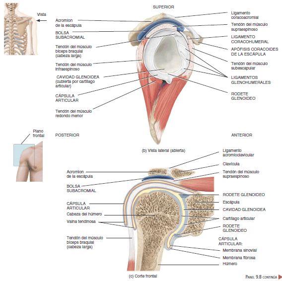
Figura 9.12 b–c · El hombro por dentro. En la vista lateral abierta compara el tamaño de la cavidad glenoidea con el de la cabeza del húmero del corte frontal: no hay proporción. Localiza también la bolsa subacromial, entre el acromion y el tendón del supraespinoso — es la que se inflama cuando el hombro duele al levantar el brazo.
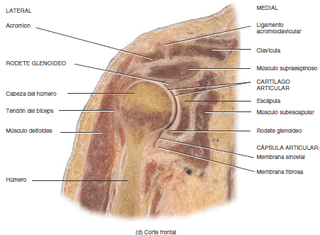
Figura 9.12 d · El mismo corte, en el cadáver. Vale la pena mirarlo después del esquema: la membrana sinovial y la membrana fibrosa que en el dibujo son dos líneas de colores aquí son un espesor real. Así se ve una articulación cuando se abre.
El codo elige lo opuesto. La tróclea del húmero encaja en la escotadura troclear del cúbito como una pieza de ensamble, y los ligamentos colaterales la cierran por los lados. Resultado: es un gínglimo uniaxial, muy estable y difícil de luxar — pero solo flexiona y extiende.
Lo interesante es que en el mismo codo hay una segunda articulación, la radiocubital proximal, que es una trocoide. Ella aporta la supinación y la pronación. Dos articulaciones distintas dentro de la misma cápsula, cada una con su eje: es la forma que tiene el cuerpo de recuperar movilidad sin renunciar a la estabilidad del gínglimo.
La rodilla es la articulación más voluminosa y la más compleja. Es un gínglimo modificado: flexiona y extiende, pero en flexión permite algo de rotación. Y arrastra un problema de fábrica — los cóndilos del fémur no encajan con la meseta tibial, que es casi plana. Todo lo demás son soluciones a ese desajuste:
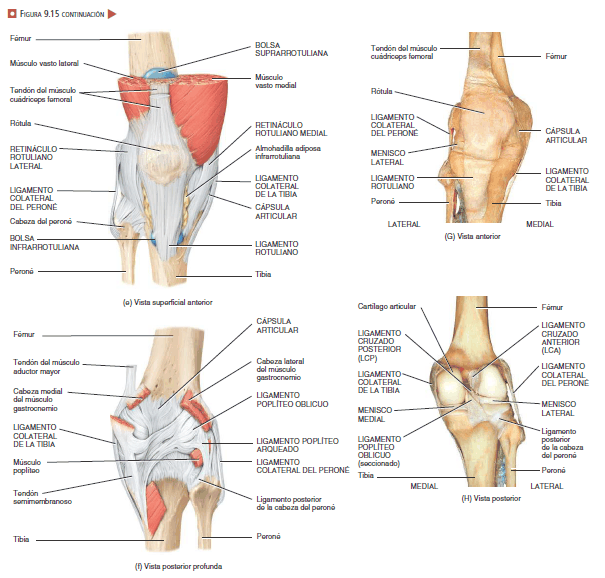
Figura 9.15 (cont.) · La rodilla desde los cuatro lados. En la vista posterior (H) se ven los dos cruzados y los dos meniscos a la vez: es la lámina que conviene memorizar. En la superficial anterior (E), las bolsas suprarrotuliana e infrarrotuliana.
| Articulación | Tipo | Qué la estabiliza | Qué paga por ello |
|---|---|---|---|
| Hombro glenohumeral |
Enartrosis · triaxial | Casi solo el manguito de los rotadores. El hueso apenas colabora | Es la que más se luxa, y casi siempre hacia abajo y adelante |
| Codo humerocubital |
Gínglimo · uniaxial | El encaje óseo tróclea–escotadura, más los colaterales | Un solo eje. La rotación hay que pedírsela a otra articulación |
| Rodilla tibiofemoral |
Gínglimo modificado · uniaxial con algo de rotación | Solo tejidos blandos: meniscos, cruzados y colaterales | Soporta todo el peso con superficies que no encajan. Lesión frecuentísima |
Un golpe lateral en la rodilla con el pie fijo en el suelo —el clásico del fútbol— lesiona tres estructuras en el mismo gesto: el ligamento colateral tibial, el menisco medial y el ligamento cruzado anterior.
No es mala suerte, es anatomía: el colateral tibial está adherido al menisco medial, así que lo que estira a uno desgarra al otro. Y una vez cedidos los dos, el cruzado anterior queda solo frente al desplazamiento. Saber qué estructura toca a cuál permite predecir la lesión completa a partir del mecanismo.
Aplica la regla al ojo y sale un caso límite. El globo es triaxial, tan móvil como el hombro, pero su estabilidad ósea es cero: no se articula con nada. Lo sostienen únicamente tejidos blandos — la grasa orbitaria, la cápsula de Tenon y los seis músculos extraoculares. Es la posición más extrema del intercambio: toda la movilidad a cambio de ninguna traba ósea.
La consecuencia se ve en la clínica. Cuando el piso de la órbita se fractura y el recto inferior queda atrapado en el trazo, el ojo deja de subir. No porque el músculo esté paralizado, sino porque está anclado: es una limitación mecánica, exactamente igual que un menisco que bloquea una rodilla.
Y de ahí sale una maniobra que es pura semiología articular: la prueba de ducción forzada. Con anestesia tópica se toma el ojo con una pinza y se intenta moverlo pasivamente. Si no se deja mover, la causa es una restricción mecánica; si se mueve sin resistencia, el problema está en el nervio o en el músculo. Es el mismo razonamiento con el que se explora cualquier articulación: movilidad activa frente a movilidad pasiva.
El vocabulario de las lesiones articulares se confunde con facilidad, y en la historia clínica hay que escribirlo bien. Conviene fijarlo de una vez, porque son cuatro palabras que significan cuatro cosas distintas.
| Término | Qué se lesiona | Detalle que lo distingue |
|---|---|---|
| Esguince | Un ligamento, por torsión forzada | La articulación no se sale de sitio. Duele, se hincha, pero las superficies siguen enfrentadas |
| Distensión | Un músculo o su tendón, por estiramiento excesivo | No es articular: es muscular. Se confunde con el esguince por el mecanismo |
| Luxación | Las superficies articulares se separan del todo | Hay deformidad visible y pérdida de función. Suele romper cápsula y ligamentos |
| Subluxación | Las superficies se separan en parte | Contacto parcial. Puede reducirse sola y pasar desapercibida |
Inflamación de una bolsa sinovial por presión o roce repetido. La subacromial del hombro y la prerrotuliana de la rodilla —«rodilla de la fregona»— son las típicas. Duele con el movimiento que comprime la bolsa, no con todos.
Inflamación del tendón o de su vaina. Aparece donde el tendón cambia de dirección o pasa por un túnel estrecho. Es la misma lógica de la bursitis: fricción repetida en un punto de paso.
Artritis es un término genérico: inflamación de una articulación. Debajo hay procesos completamente distintos, y distinguirlos importa porque algunos se manifiestan en el ojo y otros no.
| Artrosis (osteoartritis) | Artritis reumatoide | Artritis gotosa | |
|---|---|---|---|
| Causa | Degenerativa: el cartílago articular se desgasta con los años y la carga | Autoinmune: el sistema inmunitario ataca la membrana sinovial | Depósito de cristales de urato en la cavidad articular |
| Qué se destruye primero | El cartílago. La sinovial se inflama después, y poco | La sinovial, que prolifera formando un pannus y erosiona cartílago y hueso | La sinovial, por irritación de los cristales. Brotes muy dolorosos |
| A quién y dónde | Mayores. Articulaciones de carga: rodilla, cadera, columna | Cualquier edad, más en mujeres. Articulaciones pequeñas y simétricas de manos y pies | Más en varones. Clásicamente la primera metatarsofalángica |
| ¿Sistémica? | No. Es local | Sí. Afecta piel, vasos, pulmón… y ojo | Metabólica. Puede dejar depósitos en otros tejidos |
El envejecimiento articular no es una enfermedad, pero se le parece. Tres cambios, y los tres ya los puedes explicar con lo visto:
Empieza pronto —hacia los veinte en algunas articulaciones— y avanza despacio. Y como el sexto factor del apartado anterior era la falta de uso, el mejor freno disponible es trivial y poco atendido: seguir moviéndose.
Esta es la razón de fondo por la que un optometrista estudia articulaciones. Varias enfermedades reumáticas tienen manifestaciones oculares, y en más de un caso el ojo se afecta antes o con más gravedad que la articulación.
| Enfermedad | Qué aparece en el ojo |
|---|---|
| Artritis reumatoide | Queratoconjuntivitis seca —es la manifestación ocular más frecuente, por síndrome de Sjögren secundario—, epiescleritis y escleritis, y en casos graves escleromalacia perforante o queratitis ulcerativa periférica |
| Espondilitis anquilosante HLA-B27 |
Uveítis anterior aguda: ojo rojo, doloroso y fotofóbico, habitualmente unilateral y recidivante, que alterna de ojo |
| Artritis idiopática juvenil | Uveítis anterior crónica con el ojo blanco y sin dolor. No avisa |
| Artritis reactiva | Conjuntivitis, y a veces uveítis anterior. Se asocia con uretritis y artritis |
Detente en la tercera fila, porque es la que cambia una conducta. En la artritis idiopática juvenil —sobre todo en la forma oligoarticular, en niñas pequeñas y con anticuerpos antinucleares positivos— la uveítis no duele, no enrojece y no da síntomas. Avanza en silencio hacia catarata, glaucoma y ceguera. Por eso esos niños entran en un programa de tamizaje con lámpara de hendidura a intervalos fijos, aunque vean bien y no se quejen de nada.
Dicho de otra manera: en esa enfermedad, quien evita la ceguera no es quien trata la articulación, sino quien revisa el ojo cuando todavía no pasa nada.
Antes de meterse en la órbita conviene situarla. La cabeza ósea tiene 22 huesos: 8 craneales, que forman la caja que protege el encéfalo, y 14 faciales, que forman la cara. Casi todos son planos o irregulares, y casi todos están unidos por suturas — es decir, articulaciones fibrosas inmóviles, de las que acabamos de ver.
Frontal · 2 parietales · 2 temporales · occipital · esfenoides · etmoides
Tres de ellos —frontal, esfenoides y etmoides— llegan a la órbita.
2 nasales · 2 maxilares · 2 cigomáticos · 2 lacrimales · 2 palatinos · 2 cornetes inferiores · vómer · mandíbula
Cuatro llegan a la órbita: maxilar, cigomático, lacrimal y palatino.
Un mismo hueso se ve distinto según desde dónde se mire, y cada vista revela unas estructuras y esconde otras. Estas son las cuatro de referencia:
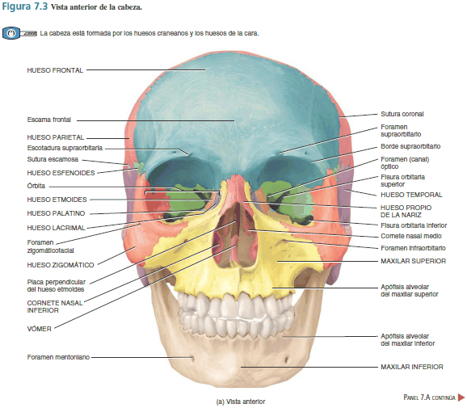
Vista anterior. Es la vista de la órbita: se ven las dos cavidades enteras, el reborde y la abertura nasal. La que más vas a usar.
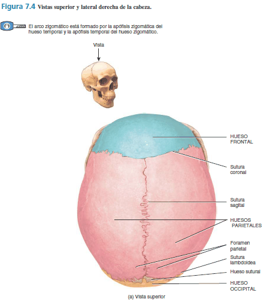
Vistas superior y lateral. Aquí se leen las suturas: coronal, sagital, lambdoidea y escamosa. Compáralas con los cuatro tipos que vimos.
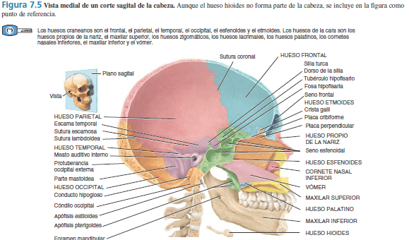
Corte sagital. La única forma de ver el esfenoides y el etmoides por dentro, y la relación de la órbita con la nariz y los senos.
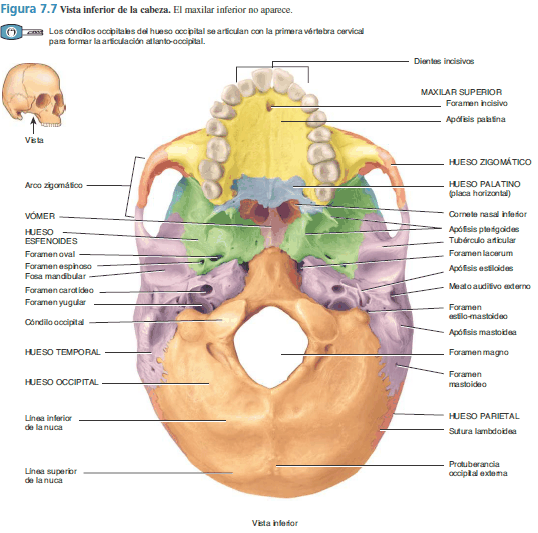
Vista inferior. La base del cráneo, con el foramen magno y las aberturas por donde entran y salen vasos y nervios.
Son cavidades llenas de aire dentro de los huesos de la cabeza, y aligeran el cráneo además de dar resonancia a la voz. Lo que importa aquí es dónde están: el frontal por encima de la órbita, el etmoidal por dentro y el maxilar por debajo. Es decir, la órbita está rodeada de aire por tres de sus cuatro paredes, separada solo por láminas de hueso de menos de un milímetro.
Esa vecindad es la que explica que una sinusitis pueda convertirse en una infección orbitaria, y que una fractura del piso descomprima la órbita hacia el seno maxilar.
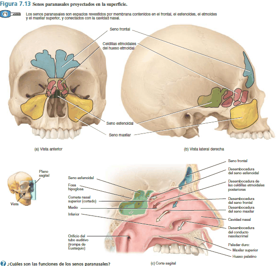
Figura 7.13 · Los senos paranasales. Proyectados sobre la cara. Mira cuánto rodean a la órbita: por arriba el frontal, por dentro el etmoidal, por debajo el maxilar.
Es una pirámide de cuatro paredes con el vértice hacia atrás, construida por siete huesos: tres del cráneo y cuatro de la cara. La estudiaremos a fondo en la clase 5; hoy nos interesa como caso de todo lo anterior: qué huesos, cómo se unen y por dónde pasan las cosas.
Frontal · Esfenoides · Etmoides
Maxilar · Cigomático · Lacrimal · Palatino
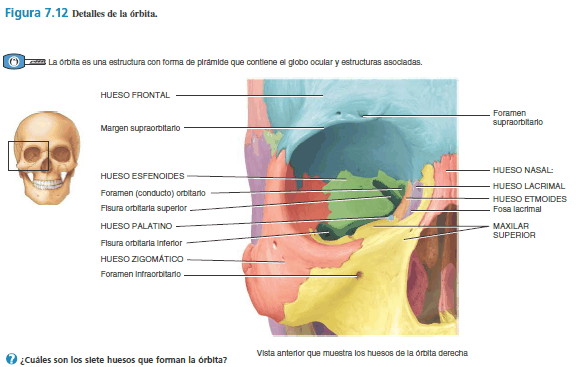
Figura 7.12 · Detalles de la órbita derecha. Cada color es un hueso distinto: cuenta siete. Ojo con el hueso nasal, que aparece rotulado al borde pero no forma parte de la órbita — está al lado. Localiza el foramen óptico, las dos fisuras y la fosa lacrimal.
| Pared | Huesos que la forman | Qué hay al otro lado |
|---|---|---|
| Techo | Frontal y ala menor del esfenoides | La fosa craneal anterior — el lóbulo frontal |
| Pared lateral | Cigomático y ala mayor del esfenoides | La fosa temporal. Es la pared más gruesa |
| Piso | Maxilar, cigomático y palatino | El seno maxilar. Muy fino |
| Pared medial | Etmoides, lacrimal, maxilar y esfenoides | Las celdillas etmoidales y la nariz. Es la más fina de todas — lámina papirácea |
Cinco de los siete son fáciles de situar. Los otros dos —esfenoides y etmoides— son huesos irregulares que no se ven desde fuera y que atraviesan la base del cráneo. Merece la pena verlos sueltos:
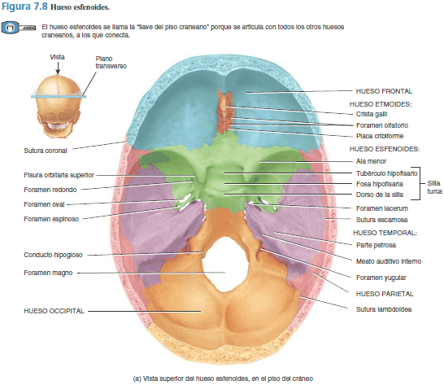
Esfenoides. Con forma de mariposa, ocupa el centro de la base del cráneo. Sus alas menores forman parte del techo de la órbita y contienen el conducto óptico; sus alas mayores, la pared lateral. Entre unas y otras queda la fisura orbitaria superior.
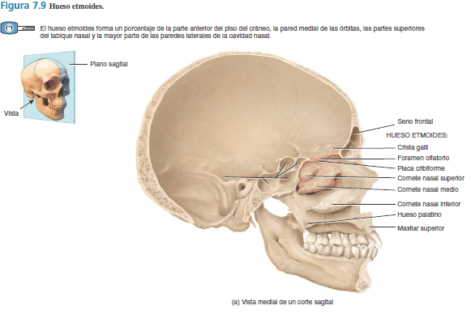
Etmoides. Esponjoso y ligerísimo, entre las dos órbitas. Sus masas laterales forman la pared medial — la lámina papirácea— y contienen las celdillas etmoidales, que son senos. Justo al otro lado de esa pared de papel está la nariz.
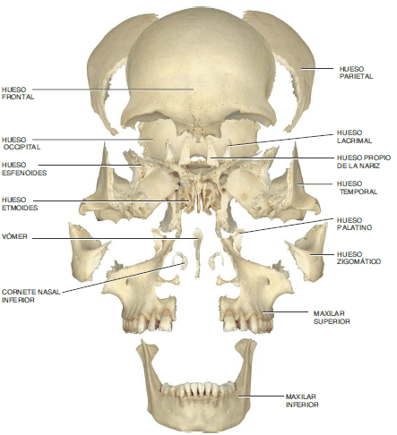
La cabeza, desarticulada. Aquí se entiende de golpe por qué la órbita necesita siete huesos: ninguno es «el hueso de la órbita». Cada pieza pertenece a otra estructura —el cráneo, la nariz, el pómulo, el paladar— y la órbita es el hueco que queda donde todas se encuentran.
Proceso de formación de hueso, por sustitución de un tejido conectivo previo.
👁 Intramembranosa en el frontal; endocondral en partes del esfenoides.
Lámina de cartílago hialino de la metáfisis que permite el crecimiento en longitud; al cerrarse deja la línea epifisaria.
👁 Es una sincondrosis: articulación cartilaginosa inmóvil.
Sustitución continua de hueso viejo por nuevo: osteoclastos reabsorben y osteoblastos reconstruyen.
👁 Descontrolada en la enfermedad de Paget, que puede comprimir el nervio óptico.
Articulación fibrosa inmóvil entre huesos del cráneo; permite el crecimiento, no el movimiento.
👁 Su cierre precoz deforma las órbitas y causa proptosis.
Articulación fibrosa unida por un ligamento o membrana; permite algo de movimiento.
👁 La gonfosis del diente en su alvéolo es de este grupo.
Articulación cartilaginosa unida por cartílago hialino; inmóvil.
👁 El ejemplo es la placa epifisaria.
Articulación cartilaginosa unida por fibrocartílago; poco móvil.
👁 Sínfisis del pubis y discos intervertebrales.
Articulación libremente móvil. Equivale exactamente a la articulación sinovial.
👁 Es la única equivalencia exacta entre las dos clasificaciones.
Secreción de la membrana sinovial que lubrica la articulación y nutre el cartílago articular.
👁 El cartílago es avascular: sin movimiento no se nutre bien.
Sinovial esferoidea: una esfera en una copa. Triaxial, la más móvil.
👁 El ojo se mueve en tres ejes sin ser una articulación.
Sinovial en bisagra: superficie convexa en cóncava. Uniaxial.
👁 Codo y tobillo; la rodilla es un gínglimo modificado.
Sensación de posición y movimiento del cuerpo, transmitida en parte por las articulaciones.
👁 Los músculos extraoculares tienen propioceptores que informan de dónde mira el ojo.
1. La placa epifisaria permite el crecimiento en longitud del hueso. Desde el punto de vista articular, ¿qué es?
2. ¿Cuál de estas afirmaciones sobre las dos clasificaciones de las articulaciones es correcta?
3. El cartílago articular no tiene vasos sanguíneos. ¿Cómo se nutre?
4. La órbita está formada por siete huesos. ¿Cuáles son los tres craneales?
5. La articulación del hombro es la que más se luxa del cuerpo. ¿Cuál es la razón anatómica de fondo?
6. Un paciente llega con dolor y deformidad visible en un dedo tras un golpe: las superficies articulares se han separado por completo. ¿Cómo se llama esa lesión?
7. En optometría, ¿cuál de estas enfermedades reumáticas obliga a un tamizaje ocular programado aunque el paciente no tenga ningún síntoma en el ojo?
8. Wolff's law states that bone is deposited where it is mechanically stressed and resorbed where it is not. Which observation best illustrates it?
La ley de Wolff sostiene que el hueso se deposita donde se le exige mecánicamente y se reabsorbe donde no. ¿Qué observación la ilustra mejor?
Recupera lo que respondiste al empezar la mañana. Lo que importa no es si acertaste, sino que ahora puedas decir por qué.
| La pregunta | Lo que ahora sabes |
|---|---|
| 1 · Resistente y liviano a la vez | Es un tubo, no una barra: compacto donde soporta la flexión, esponjoso donde solo reparte carga, y hueco en el centro, que además se aprovecha para la médula |
| 2 · Siete huesos para una órbita | Porque la órbita no es una pieza: es la intersección donde se encuentran el cráneo, la nariz, el pómulo y el paladar. Cada hueso pertenece a otra estructura |
| 3 · Articulaciones que no se mueven | Las suturas existen para permitir el crecimiento del cráneo, no el movimiento. Cuando se cierran antes de tiempo, la cabeza crece deformada |
| 4 · Un esqueleto que se rehace | La remodelación repara microfracturas, permite usar el hueso como banco de calcio y adapta su forma a las cargas — la ley de Wolff |
Las cuatro respuestas dicen lo mismo con distintas palabras, y es lo que llevamos viendo desde la primera clase: la forma sigue a la función. El hueso es hueco porque así pesa menos sin perder resistencia; la órbita tiene siete piezas porque cada una crece a su ritmo; las suturas no se mueven porque su trabajo era otro; el esqueleto se demuele y se rehace porque un material fijo no podría adaptarse.
La próxima clase abrimos cabeza y cuello: cráneo, cara y la órbita en detalle, con sus paredes, sus aberturas y lo que pasa por cada una. Hoy has puesto las herramientas; el jueves 27 se usan. Lectura previa: Tortora, capítulo 7.
El ojo es el único órgano de los sentidos que vive dentro de una caja de hueso y sale de ella por un agujero. Esa doble condición —protegido y a la vez dependiente de un canal estrecho— es la que hace que la osteología no sea una asignatura ajena a la optometría: casi todo lo que comprime, deforma o rompe el hueso de la órbita acaba en la consulta de un optómetra.